存目Cunmu
这些年看过、读过、玩过的，
收成一本写你的书。
那年夏天通宵看完的番，通勤路上读完的书，存档里两百个小时的游戏。存目把散在各处的记录收成一本书，写的是你。
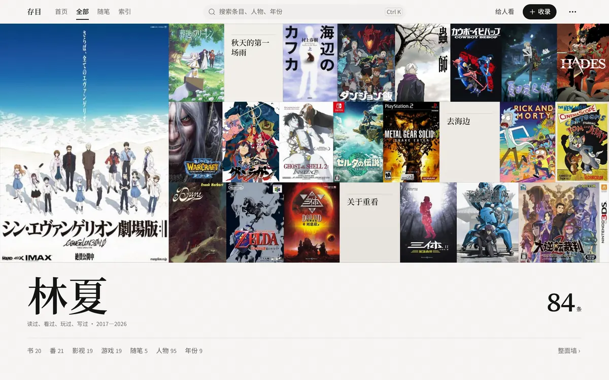
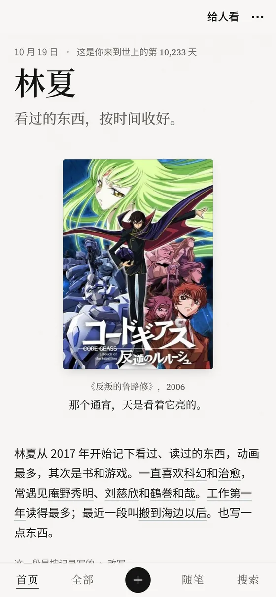
你已经记了很多年
在 Bangumi 点过「看过」，在豆瓣标过「读过」，Steam 替你记着每个游戏玩了多久。几百条，上千条，散在三四个地方，每一条都只是一行字。
可它们加在一起，是你这些年怎么过来的：哪个夏天迷上了科幻，哪一年总在通勤路上读书，哪部番让你在宿舍坐到天亮。
扉页写的是你
存目把这些记录读进来，替你写出第一稿：你一直喜欢什么，常遇见哪些名字，有过哪几段日子。你只需要改一句话，挑几部最爱。
最爱、一直喜欢的事、有名字的几段时期、你自己写下的随笔。都由记录提议，你点一下决定留不留。
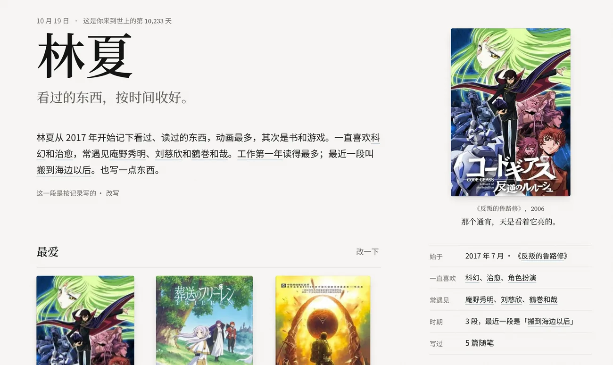
走过的，一整面墙
所有记录都在「全部」里。点「整面墙」铺满整屏，右边是年份刻度，一路往回翻。
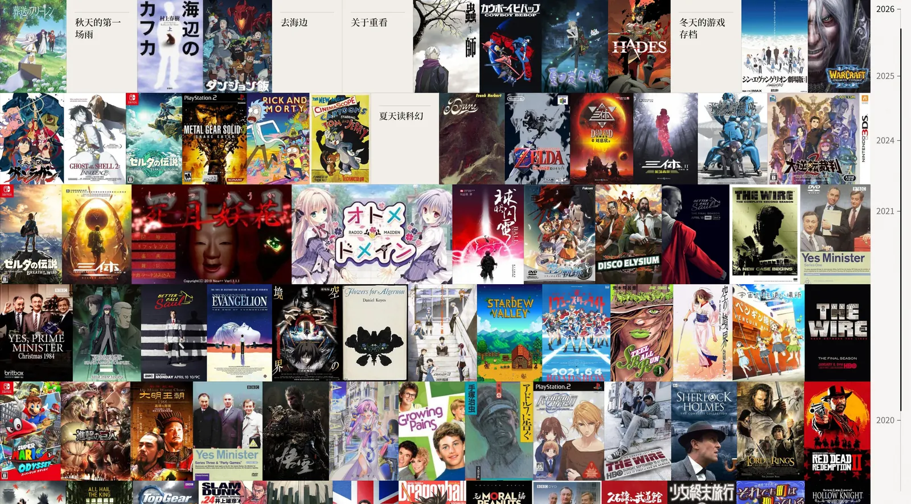
每一年，一排书架
书、番、电影电视、音乐、游戏，按年份摆好，书脊或封面两种摆法。同一个作者、同一段时期、同一种兴趣，自己会连起来。
书脊立成一排，指一下，转出封面。
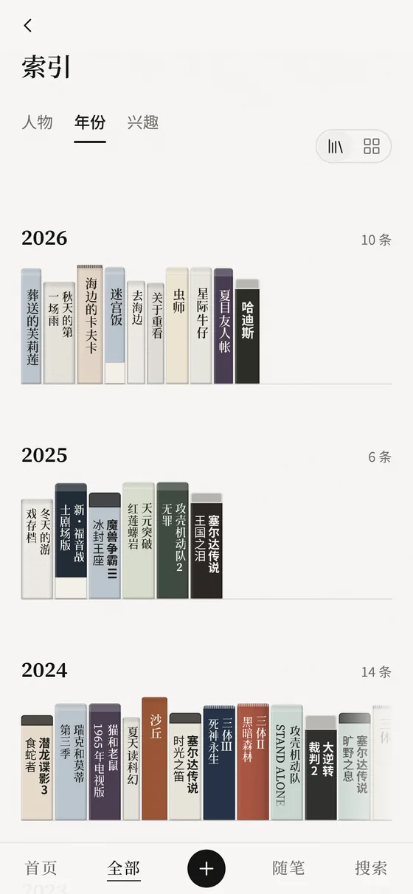
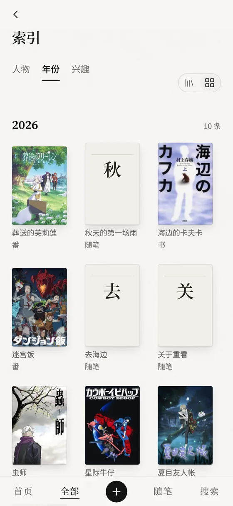
从各处搬来
一个用户名，一份备份，一段笔记。
- Bangumi用户名读公开收藏，个人令牌能读私密的，以后自动同步。
- 豆瓣备份 Excel（豆伴 / 豆备导出），只读文件，不连豆瓣。
- 微信读书粘贴笔记。
- Steam游戏和时长，用你自己的 Web API Key。
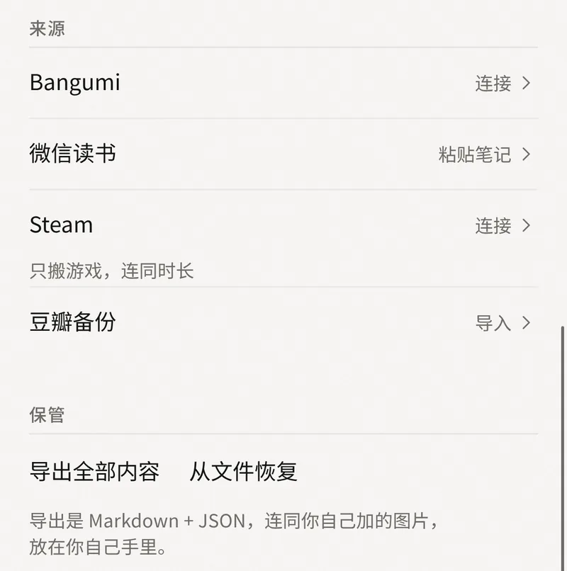
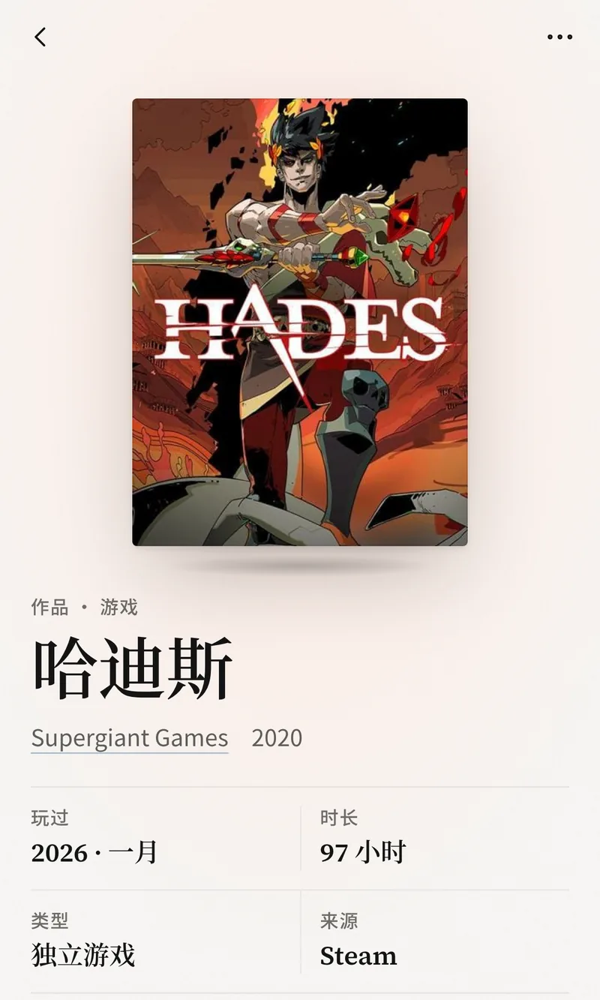
自己添上
一个书名、一个链接，或者手动加；短评、摘抄、随笔，可以配图。
记不清也没关系
拿不准的日子标「约」，想不起来的放进「时间未知」，不催你补全。
合上之前，递给一个人看
「给人看」只留下你放上首页的东西，标了「只给自己」的不会出现，按住才能退出。
也可以从「···」里存成一张长图。只有放上首页的，才会出现在图里。
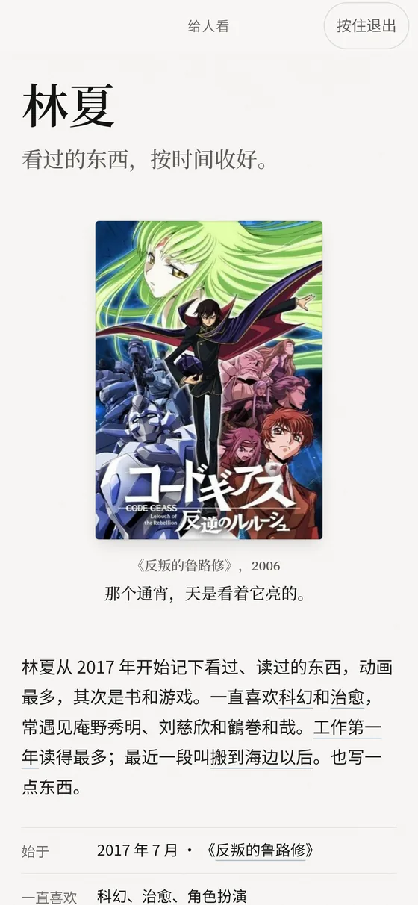
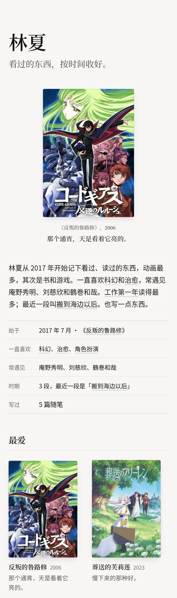
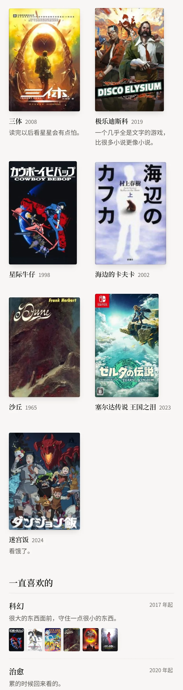
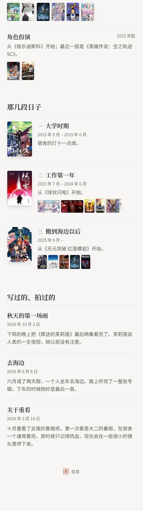
整面墙、年份书架、写你的首页、给人看。44 秒，无声。
只存其目Keep the titles.
「存目」是《四库全书》里的说法。编书的时候，有些书没有收进全文，只留下书名和一段提要，叫「存其目」。
我们觉得这样就够了。不用写长评，不用打分，留下一个名字、一个日子、一句话。多年以后再看到它，那个夏天就回来了。
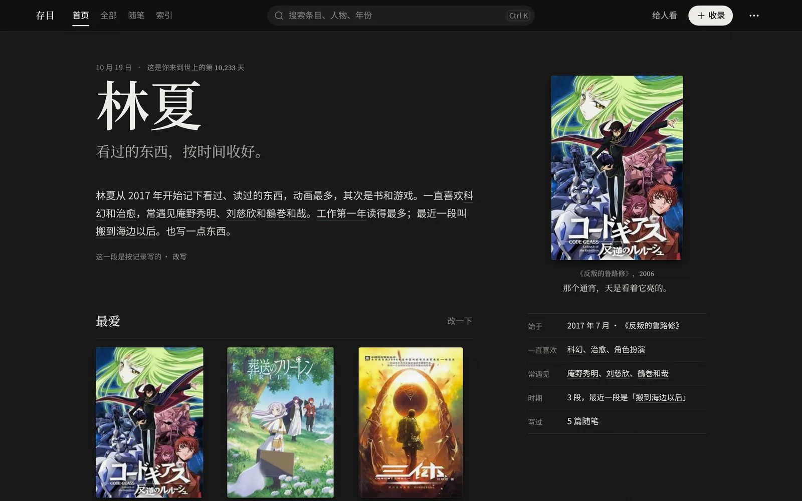
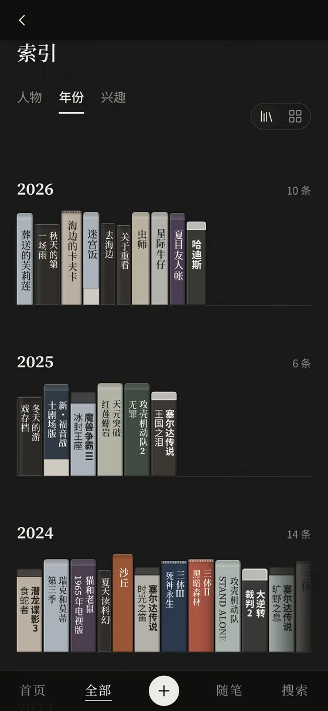
浅色和深色跟随系统。
它只在你手里
没有账号，没有存目自己的服务器，不统计你怎么用。
记录存在这台设备上。只有你连接了 Bangumi 或 Steam，才会去连它们。
Bangumi 令牌和 Steam Key 只存在本机，不会进导出文件。
随时可以把全部内容导出成一个 ZIP：Markdown、JSON 和你加的图片。也能从文件恢复，或者一次删光。
豆瓣只读你选的备份文件，不连豆瓣；微信读书只读你粘贴进来的笔记。
细节见应用里的「设置 › 隐私说明」。
三步，翻开第一页
下载
Android 的 .apk，或 Windows 的安装版、免安装版。
把记录搬进来
在「设置 › 来源」里填 Bangumi 用户名，或选豆瓣备份文件，或填你自己的 Steam Web API Key。
翻到首页
写你的那一页已经起好草稿。改一句话，挑几部最爱。
Windows
Windows 10 / 11 · 64 位
Cunmu_0.1.0_x64-setup.exe · …-portable.exe
Windows 版还没有代码签名，第一次运行可能提示「Windows 已保护你的电脑」：点「更多信息 → 仍要运行」。
v0.1.0，2026 年 10 月 17 日发布。暂时没有 iOS 版。所有文件和更新说明在 GitHub Releases ›
问答
- 换手机怎么办？
- 在旧设备上导出 ZIP，到新设备上恢复。
- 和 Bangumi、豆瓣是什么关系？
- 没有关系。存目只读你自己的记录，不往那边写任何东西。
- 要写长评、打分吗？
- 不用。存目从不让你打分，留下一个名字、一个日子、一句话就够了。
- 有 iOS 版吗？
- 暂时没有。现在支持 Android 7.0 及以上，和 Windows 10 / 11。
- Windows 为什么提示「已保护你的电脑」？
- 安装文件还没有代码签名。点「更多信息 → 仍要运行」；介意的话，可以从源码自己构建。
- 截图里的封面呢？
- 来自 Bangumi 等来源，版权归各自的权利人，只用来展示界面。图中的书库是示例。